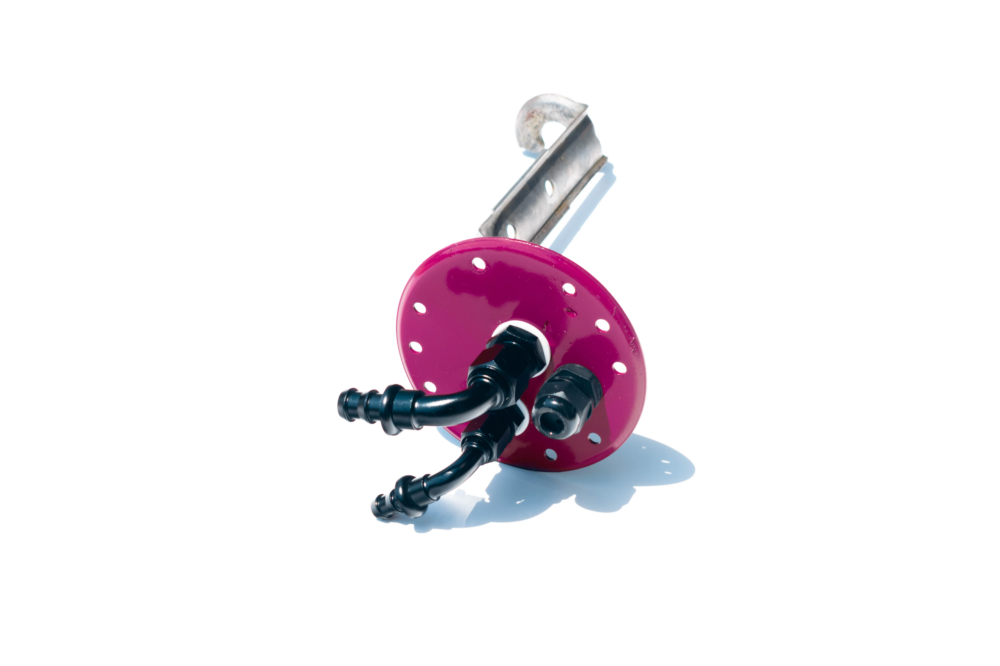
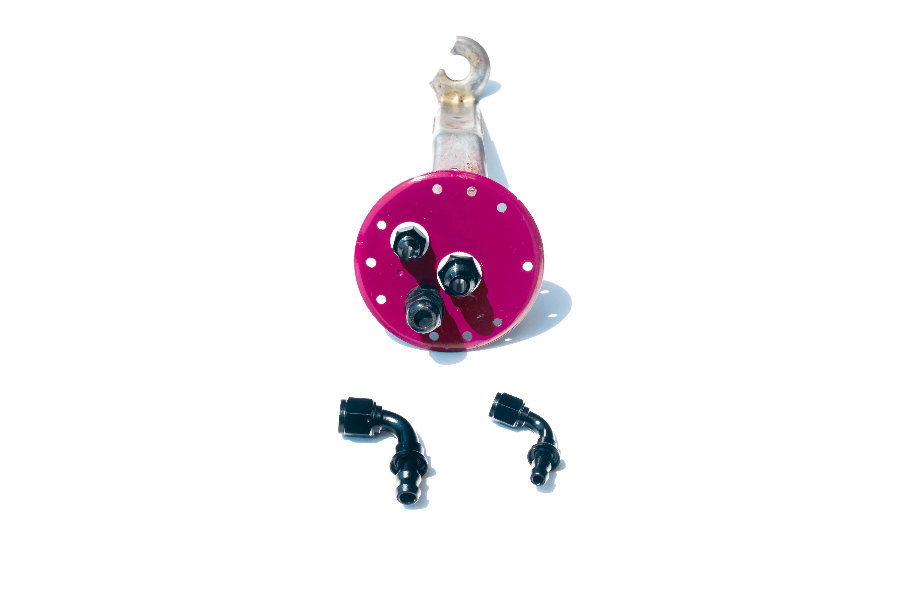

MK3 Supra Fuel Pump Hanger Modification
8AN feed & 6AN return · PTFE washers · 12 AWG wiring · E85 compatible · custom sizes on request
If you're upgrading the fuel system on your MK3 Supra (MA70), the factory plastic hanger nipples are the first thing that needs to go. They're a liability on a high-pressure, high-flow setup and won't survive a serious fuel system build. We modify your existing hanger by removing those nipples and welding in proper AN fittings — 8AN on the feed side and 6AN on the return side as standard — so you can run clean braided AN lines all the way to the fuel rail.
The fittings seal with PTFE Teflon washers, which are chemically inert, E85-safe, and won't degrade over time. Fuel pump wiring is done in 12 AWG, properly sized for the current draw of high-flow in-tank pumps. You ship us your hanger, we do the work, and ship it back. If your build calls for different fitting sizes, just ask — we can accommodate custom configurations. We also consider other vehicles on request.
- 8AN feed fitting and 6AN return fitting (standard)
- PTFE Teflon washers — chemically inert, leak-free seal
- 12 AWG fuel pump wiring — rated for high-current pump draw
- E85 compatible — safe for ethanol-blended and flex fuels
- Factory plastic nipples removed and replaced with welded AN fittings
- Compatible with high-flow in-tank fuel pump upgrades
- Custom fitting sizes available — just ask
- Primarily for MK3 Supra (MA70) — other hangers considered on request
- Send-in service — ship your hanger, we ship it back
Standard Configuration
| Primary Application | Toyota MK3 Supra (MA70) |
| Feed Fitting | 8AN (custom sizes available on request) |
| Return Fitting | 6AN (custom sizes available on request) |
| Seals | PTFE Teflon washers — E85 safe, chemically inert |
| Wiring | 12 AWG — rated for high-current fuel pump use |
| Fuel Compatibility | All fuels including E85 / flex fuel |
| Service Type | Send-in — ship your hanger to us |
| Pricing | Starting ~$250 — contact for exact quote |
| Other Vehicles | Contact us — we can evaluate other hangers |
Need a different fitting size or have a different vehicle? Contact us and we'll figure it out.
The Right Fittings. The Right Way.
The factory MK3 Supra (MA70) hanger uses push-on plastic nipples designed for the stock fuel system — not the higher pressures and flow rates of a performance pump upgrade. Welded AN fittings with PTFE Teflon washers eliminate that failure point entirely. Paired with 12 AWG wiring sized for real pump current draw and materials that are fully E85 compatible, the result is a hanger you can build a serious fuel system around.